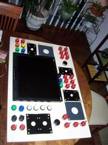
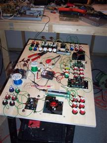
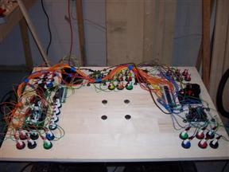
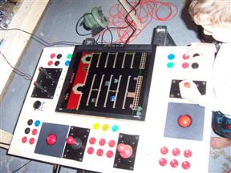
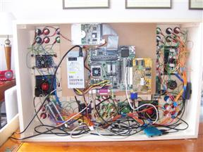
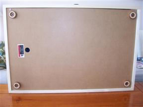
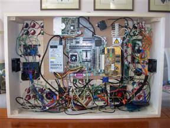
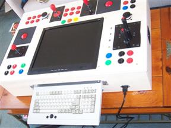
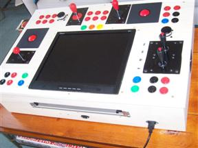
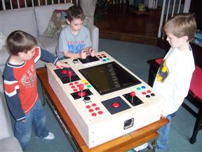

The Tabletop Arcade Machine
Started 2/21/2008
I decided I wanted to finally build my own arcade machine to run MAME
on but none of the available designs (here, here, here)
did what I wanted so I decided to create my own. I wanted something
that could be used for both horizontal
and vertically oriented games so something like a three sided cocktail
cabinet was what I was looking for. But I also wanted share the spinner
and trackballs between the horizontal and vertical players and allow
for some four player action. I decided to ditch the idea of hiding the
controls under the table like most cocktail designs. Why bother trying
to be a table when it's suppose to be an arcade machine anyways. I also
wanted it to rest on an existing table so the entire machine could be
transported to other peoples homes for parties and stored away when not
in use and so it needed to be a thin as possible.

Here is my initial design, created by laying out the controls and
buttons
so they could be accessed from either side. I originally drew the
design on paper and then ordered up a 4:3 19" LCD monitor, controls and
buttons. I bought the monitor from New
Egg and most of the controls from Ultramarc and the
rest from Happ.
I liked the control designs and prices from Ultramarc better than Happ
but they didn't have as wide a selection. Ultramarc also has the
interface hardware required to hook things up to the PC. I used
a I-PAC4
and a OpticPac
controller to be able to hook everything up. I really like that you can
switch the joystick
from 4 to 8 way from the top panel by just rotating it. I also got one
of the analog
joysticks for games that need it like food fight and just to
get a variety of control types to experiment with.

After drilling all the holes I started wiring up the controls. It's a
lot of work crimping and cutting and stripping wire.

Here most of the buttons and controls are now wired. Notice I have the
LCD monitor mounted on the other side with the four bolts in the center.

This is so I can turn it over and let my son try it out with the PC on
the workbench. Since I didn't really have a design for this done before
I started I am building it kind of from the top down.

I had to cut a hole in the top for the monitor to rest in and then
mounted a platform underneath to hold a salvaged keyboard drawer and
then
the PC motherboard, power supply, hard drive and video card. I used a
90
degree PCI adapter to reduce the clearance of the system. All these
items I salvaged from the dumpster. I then built and centered an
enclosure around everything with a little bit of a lip on the top side.

Here is the bottom with a hole so you can remove it and rubber feet
to protect what it sits on.

Finally inside I added fans and a wall socket plug connected to a
circuit breaker switch for safety. Also an external USB connector and
wireless network, again all salvaged parts.

The finished machine with the keyboard drawer out but still needs
painting.

Here is it with the keyboard drawer closed. I really think the little
keyboard drawer makes the machine. I had to repair the built in mouse
but otherwise it works great. The two joysticks next to each other are
great for the tank game Assault or just use one joystick for Zaxxon.
The only thing missing is a diagonal joystick for Q-bert.

A successful project.
Parts list
$12 1 2ft x 4ft MDO
$30 2 3/4" x 8" x 8ft aspen boards
$15 1 3/4" x 2ft x 4ft aspen glued board
$10 1 1" x 2" x 8ft pine board
$0 1 box of machine screws on bench
$0 1 box of wood screws on bench
$0 1 8"x16"x1/8" aluminum scrap metal salvaged
2 SpinTrak Rotary Control spinners without mini-pac cable from ultimarc
2 spinner knobs from ultimarc
2 Flyweight medium spinner wiegths from ultimarc
2 2 1/4" track balls with optic pac cable from ultimarc
2 track ball mounting plates from ultimarc
2 Mag-Stik Plus 4/8 way easy top switchable joystick from ultimarc
1 red ball top handle for one of the above joysticks
1 ipac4 with USB cable from ultimarc
1 opti-pac with USB cable from ultimarc
1 UltraStik 360 Oval Top analog joystick with USB cable from ultimarc
1 UltraStik Restrictor Plate Kit
37 arcade buttons of various colors including player 1-4 stencils from ultimarc
subtotal $650 from Ultimarc
$75 2 mini 8 way top button joysticks from Happ
$10 2 adapter plates for above joysticks
$0 1 mini rack mount keyboard salvaged
$0 1 mini PC power supply salvaged
$0 2 fans salvaged
$0 2 plastic fan faceplates salvaged
$0 1 circuit breaker salvaged
$0 1 power distribution block salvaged
$0 1 power supply socket salvaged
$0 1 8 GB IDE harddrive salvaged
$0 1 motherboard with CPU & RAM salvaged
$0 1 90 degree PCI adapter salvaged
$40 video card PCI from newegg
$190 1 19" LCD monitor from newegg
$10 1 wireless USB access point from woot
$0 1 USB hub from junk box
$0 1 surface mount USB extender salvaged
$0 1 USB motherboard connector salvaged
$0 1 spools of colored wire on bench on bench
$0 1 box of crimps on bench
Total $1042
back